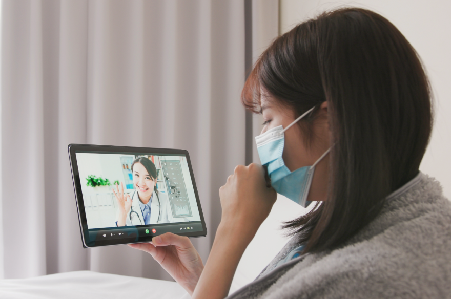

บริการการแพทย์ทางไกล
Telemedicine
กิจกรรมโครงการ Telemedicine เทศบาลเมืองกำแพงเพชร
ดูรายละเอียดภาพกิจกรรมและข่าวสารเพิ่มเติม

บริการการแพทย์ทางไกล (Telemedicine) คืออะไร?
Telemedicine คือการนำเทคโนโลยีการสื่อสารมาประยุกต์ใช้ในการให้บริการด้านสาธารณสุข เพื่อให้ผู้ป่วยและบุคลากรทางการแพทย์สามารถพูดคุย ปรึกษา วินิจฉัย และติดตามการรักษาได้จากระยะไกล...อ่านต่อ
3 ขั้นตอนง่ายๆ ในการเข้ารับบริการ
เริ่มต้นประสบการณ์การดูแลสุขภาพยุคใหม่ได้ในไม่กี่ขั้นตอน
ลงทะเบียนและทำนัด
กรอกข้อมูลส่วนตัวและอาการเบื้องต้นเพื่อทำการนัดหมายพบแพทย์
พบแพทย์ผ่านวิดีโอคอล
ปรึกษาปัญหาสุขภาพกับแพทย์ผู้เชี่ยวชาญผ่านระบบ
วิดีโอคอลที่ปลอดภัย
รับยาและเอกสาร
มารับยาและใบรับรองแพทย์ด้วยตนเองที่โรงพยาบาล (ยังไม่มีบริการส่งยาทางไปรษณีย์)
ข้อดีของบริการ Telemedicine
สัมผัสประสบการณ์การดูแลสุขภาพที่สะดวกสบายและเข้าถึงง่ายกว่าที่เคย
ความสะดวกสบาย
รับคำปรึกษาจากแพทย์ได้จากทุกที่ โดยไม่ต้องเสียเวลาเดินทางมาโรงพยาบาล
ประหยัดเวลาและค่าใช้จ่าย
ลดค่าใช้จ่ายในการเดินทางและประหยัดเวลาที่ต้องใช้ในการรอคอยที่โรงพยาบาล
ลดความเสี่ยง
ลดการสัมผัสและลดความเสี่ยงในการติดเชื้อต่างๆ โดยเฉพาะในสถานการณ์โรคระบาด
การดูแลต่อเนื่อง
เหมาะสำหรับผู้ป่วยโรคเรื้อรังที่ต้องการติดตามอาการกับแพทย์อย่างสม่ำเสมอ
สิทธิ์การรักษาและอัตราค่าบริการ
ตรวจสอบสิทธิ์การรักษาที่รองรับและอัตราค่าบริการเบื้องต้น
สิทธิ์ข้าราชการ
สามารถเบิกจ่ายตรงได้ตามระเบียบกรมบัญชีกลาง (เฉพาะค่ายาและเวชภัณฑ์)
สิทธิ์บัตรทอง (30 บาท)
ใช้สิทธิ์ได้เฉพาะผู้ที่มีสิทธิ์รักษาอยู่ที่โรงพยาบาลชุมชนเทศบาลเมืองกำแพงเพชร
ชำระเงินเอง
สำหรับผู้ที่ไม่มีสิทธิ์รักษาที่โรงพยาบาล หรือต้องการความสะดวกรวดเร็ว
* กรุณาตรวจสอบสิทธิ์การรักษาของท่านกับเจ้าหน้าที่ก่อนเข้ารับบริการ โทร. 055-716-715
* อัตราค่าบริการอาจมีการเปลี่ยนแปลง โปรดสอบถามเจ้าหน้าที่ก่อนเข้ารับบริการ
** ผู้มีสิทธิ์บัตรทอง/ประกันสังคม สามารถใช้สิทธิ์ได้ตามเงื่อนไขของโรงพยาบาล
ข้อจำกัดของบริการ Telemedicine
สัมผัสประสบการณ์การดูแลสุขภาพที่สะดวกสบายและเข้าถึงง่ายกว่าที่เคย
ภาวะฉุกเฉินทางการแพทย์
ไม่เหมาะสำหรับภาวะฉุกเฉินหรืออาการรุนแรงที่ต้องการการรักษาอย่างเร่งด่วน กรุณาติดต่อห้องฉุกเฉินโดยตรง
การตรวจร่างกาย
แพทย์ไม่สามารถทำการตรวจร่างกายได้โดยตรง ซึ่งอาจเป็นข้อจำกัดในการวินิจฉัยบางโรค
การออกเอกสารบางประเภท
การออกใบรับรองแพทย์บางประเภทที่ต้องมีการตรวจร่างกายอย่างละเอียด อาจไม่สามารถทำผ่านระบบนี้ได้
ปัญหาทางเทคนิค
คุณภาพของบริการขึ้นอยู่กับความเสถียรของอินเทอร์เน็ตและอุปกรณ์ของท่าน
คำถามที่พบบ่อย (FAQ)
รวบรวมคำถามที่พบบ่อยเพื่อไขข้อสงสัยเกี่ยวกับการใช้บริการ
เหมาะสำหรับผู้ป่วยที่มีอาการไม่รุนแรง, ผู้ป่วยโรคเรื้อรังที่ต้องการติดตามอาการ,
ผู้ที่ต้องการคำปรึกษาด้านสุขภาพทั่วไป หรือผู้ที่ไม่สะดวกเดินทางมาโรงพยาบาล
คุณต้องมีสมาร์ทโฟน, แท็บเล็ต, หรือคอมพิวเตอร์ที่มีกล้อง, ไมโครโฟน
และเชื่อมต่ออินเทอร์เน็ตความเร็วสูงได้
ค่าบริการจะแตกต่างกันไปขึ้นอยู่กับแผนกและแพทย์ผู้ให้คำปรึกษา
กรุณาติดต่อสอบถามข้อมูลเพิ่มเติมเกี่ยวกับค่าใช้จ่ายและการใช้สิทธิ์ประกันต่างๆ
กับทางโรงพยาบาลโดยตรง
เราใช้ระบบที่มีมาตรฐานความปลอดภัยสูงในการเก็บรักษาข้อมูลส่วนบุคคลและข้อมูลการรักษาของคุณ
การสนทนาระหว่างคุณและแพทย์จะถูกเข้ารหัสเพื่อความเป็นส่วนตัวสูงสุด
ติดต่อเรา
หากคุณมีคำถามหรือต้องการข้อมูลเพิ่มเติม สามารถติดต่อเราได้ตามช่องทางด้านล่าง
ที่อยู่
35 ซ.2 ถ.ราชดำเนิน 1 ต.ในเมือง อ.เมือง จ.กำแพงเพชร 62000
โทรศัพท์
055-716-715
อีเมล
prathom_heath@gmail.com
เวลาทำการ
วันจันทร์ - ศุกร์, 08:30 - 16:30 น.
(ปิดวันหยุดราชการ)
พร้อมเริ่มต้นดูแลสุขภาพของคุณแล้วหรือยัง?
ลงทะเบียนเพื่อรับบริการการแพทย์ทางไกล (Telemedicine) และนัดหมายแพทย์ผู้เชี่ยวชาญได้แล้ววันนี้